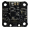

Pigeon IMU

What is it?
A 9 degree-of-freedom IMU that can be connected via CAN bus or a Talon SRX data cable.
Properties
- CAN ID
- The ID of the CAN device. This must match the ID of the
device configured with the roboRIO web-based configuration page.
See Also